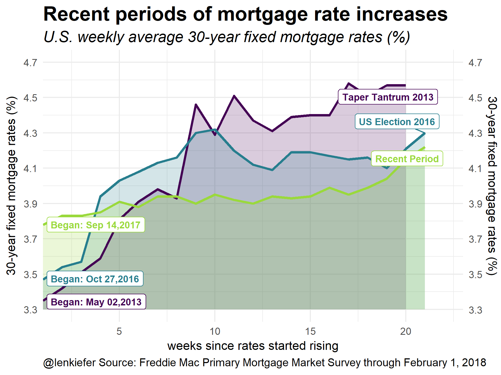

THIS MORNING I SAW AN INTERESTING CHART OVER ON BLOOMBERG. In this post they compared recent 10-year Treasury yield movements with the Taper Tantrum in 2013. The chart you can see here was an area chart with overlapping line plots.
{kind=link}
I thought it would be a fun exercise to remix a similar chart with R.
Eventually it will look like this:

Let’s make our remix and try out a few alternative plots.
Get data
Following our Mortgage rates are low! post we will use quantmod and tidyquant to get mortgage rate data via the St. Louis Federal Reserve Economic Database FRED.
For more on tidyquant also check out my tidyquantum of solace.
#####################################################################################
## Load libraries ##
#####################################################################################
library(tidyverse)
library(readxl)
library(tidyquant)
library(tibbletime)
library(ggridges)
library(viridis)
library(cowplot)
library(ggbeeswarm)#####################################################################################
## Get mortgage data ##
# Can also get direct here: http://www.freddiemac.com/pmms/docs/historicalweeklydata.xls
#####################################################################################
tickers<-c("MORTGAGE30US")
df<-tq_get(tickers,get="economic.data",from="2000-01-01")
# download data via FRED
df<-tq_get(tickers, # get selected symbols
get="economic.data", # use FRED
from="2012-01-01") # go from 2007 forwardNow that we have the data we can identify periods of rapid rate increases. I tried some algorithmic approaches (like with quantmod::findPeaks) but the pattern is clear enough that “eyeball econometrics” can work here.
df.1 <- filter(df, date>="2013-05-02" & date <= "2013-09-12") %>%
mutate(period="Taper Tantrum 2013", id=row_number())
df.2 <- filter(df, date>="2016-10-27" & date <= "2017-03-16") %>%
mutate(period="US Election 2016", id=row_number())
df.3 <- filter(df, date>="2017-09-14" & date <= "2018-03-31") %>%
mutate(period="Recent Period", id=row_number())
df.note<- data.frame( date=as.Date(c("2013-05-02","2016-10-27","2017-09-14")),
period=c("Taper Tantrum 2013", "US Election 2016","Recent Period"),
end.date=as.Date(c("2013-09-12","2017-03-16","2018-02-01")))
df2<- bind_rows(df.1,df.2,df.3)
df2<-df2 %>% mutate(periodf=factor(period, levels=c("Taper Tantrum 2013", "US Election 2016","Recent Period")))
df.note1<-left_join(df.note, df2 %>% select(date,price, id, periodf), by="date")
df.note1<- left_join(df.note1, df2 %>% select(date,price,id), by=c("end.date"="date"))
# plot with annotations
g1<-
ggplot(data=df2, aes(x=id,y=price, color=periodf,fill=periodf))+
geom_ribbon(aes(ymin=3.3,ymax=price),color=NA,alpha=0.2)+
geom_line(size=1.1)+
scale_fill_viridis(option="D",discrete=T,end=0.85)+
scale_color_viridis(option="D",discrete=T,end=0.85)+
theme_minimal()+
scale_x_continuous(expand=c(0,0),limits=c(1,23))+
scale_y_continuous(limits=c(3.3,4.7),breaks=seq(3.3,4.7,.2),sec.axis=dup_axis())+
labs(x="weeks since rates started rising",y="30-year fixed mortgage rates (%)",
title="Recent periods of mortgage rate increases",
subtitle="U.S. weekly average 30-year fixed mortgage rates (%)",
caption="@lenkiefer Source: Freddie Mac Primary Mortgage Market Survey through February 1, 2018")+
ggrepel::geom_label_repel(data=df.note1, inherit.aes=F, fontface="bold",size=3,
aes(x=id.y,color=periodf, label=period,y=price.y))+
ggrepel::geom_label_repel(data=df.note1, inherit.aes=F, fontface="bold",size=3,
aes(x=id.x,color=periodf, label=paste0("Began: ",as.character(date,format="%b %d,%Y")),y=price.x))+
theme(plot.caption=element_text(hjust=0),legend.position="none",
plot.title=element_text(face="bold",size=18),
plot.subtitle=element_text(face="italic",size=14),
strip.text=element_text(face="bold",size=14))
g1 # print plot
This plot compare overlapping time periods. The x axis displays weeks from a starting week. For example, the week of September 14, 2017 is 1 for the Recent Period Line. I mimicked the style of the Bloomberg plot using shaded area with alpha transparencies. The Bloomberg plot only had two periods, so the comparison was easier. Still, I think we can glean something from this plot. Adding a fourth line would probably be too much. I explore a small multiple version below.
Two things to note from this plot. First, the rate of increase in rates is much less (so far) in the Recent Period. The Recent Period began from a higher starting point but (so far) hasn’t passed the endpoints of the other periods.
To help understand the plot, let’s consider a more traditional plot.
g2<-
ggplot(data=df, aes(x=date,y=price))+
geom_line(color="darkgray",inherit.aes=F,aes(x=date,y=price))+
theme_minimal()+
scale_y_continuous(limits=c(3.3,4.7),breaks=seq(3.3,4.7,.2),sec.axis=dup_axis())+
scale_fill_viridis(option="D",discrete=T,end=0.85)+
scale_color_viridis(option="D",discrete=T,end=0.85)+
labs(x="",y="30-year fixed mortgage rates (%)",
title="Recent periods of mortgage rate increases",
subtitle="U.S. weekly average 30-year fixed mortgage rates (%)",
caption="@lenkiefer Source: Freddie Mac Primary Mortgage Market Survey through February 1, 2018")+
theme(plot.caption=element_text(hjust=0),legend.position="none",
plot.title=element_text(face="bold",size=18),
plot.subtitle=element_text(face="italic",size=14),
strip.text=element_text(face="bold",size=14))
g2
This plot is a standard time series plot. Eyeball econometrics can pick out three periods of rate increases since 2012. Let’s highlight them:
g3<-
ggplot(data=df2, aes(x=date,y=price, color=periodf,fill=periodf))+
geom_line(data=df %>% mutate(id=row_number()),color="darkgray",inherit.aes=F,aes(x=date,y=price))+
geom_ribbon(aes(ymin=3.3,ymax=price),color=NA,alpha=0.2)+
geom_line(size=1.1)+
scale_fill_viridis(option="D",discrete=T,end=0.85)+
scale_color_viridis(option="D",discrete=T,end=0.85)+
theme_minimal()+
geom_label(data=df.note1, inherit.aes=F, fontface="bold",size=3,
aes(x=end.date,color=periodf, label=period,y=price.y),hjust=1,nudge_y=0.05)+
scale_y_continuous(limits=c(3.3,4.7),breaks=seq(3.3,4.7,.2),sec.axis=dup_axis())+
labs(x="",y="30-year fixed mortgage rates (%)",
title="Recent periods of mortgage rate increases",
subtitle="U.S. weekly average 30-year fixed mortgage rates (%)",
caption="@lenkiefer Source: Freddie Mac Primary Mortgage Market Survey through February 1, 2018")+
theme(plot.caption=element_text(hjust=0),legend.position="none",
plot.title=element_text(face="bold",size=18),
plot.subtitle=element_text(face="italic",size=14),
strip.text=element_text(face="bold",size=14))
g3
I’ve gone ahead and labeled the three periods. The Taper Tantrum corresponds to the period over the spring of 2013. Following the U.S. election in November of 2016 rates also increased. And finally, we have the recent increase in rates.
Next, let’s drop the gray periods and use a small multiple to compare the periods.
g4<-
ggplot(data=df2, aes(x=id,y=price, color=periodf,fill=periodf))+
geom_ribbon(aes(ymin=3.3,ymax=price),color=NA,alpha=0.2)+
geom_line(size=1.1)+
scale_fill_viridis(option="D",discrete=T,end=0.85)+
scale_color_viridis(option="D",discrete=T,end=0.85)+
theme_minimal()+
scale_x_continuous(expand=c(0,0),limits=c(1,23))+
ggrepel::geom_label_repel(data=df.note1, inherit.aes=F, fontface="bold",size=3,
aes(x=id.y,color=periodf, label=paste0(as.character(end.date,format="%b %d,%Y"),": ",price.y),y=price.y))+
ggrepel::geom_label_repel(data=df.note1, inherit.aes=F, fontface="bold",size=3,
aes(x=id.x,color=periodf, label=paste0(as.character(date,format="%b %d,%Y"),": ",price.x),y=price.x))+
scale_y_continuous(limits=c(3.3,4.7),breaks=seq(3.3,4.7,.2),sec.axis=dup_axis())+
labs(x="weeks since rates started rising",y="30-year fixed mortgage rates (%)",
title="Recent periods of mortgage rate increases",
subtitle="U.S. weekly average 30-year fixed mortgage rates (%)",
caption="@lenkiefer Source: Freddie Mac Primary Mortgage Market Survey through February 1, 2018")+
theme(plot.caption=element_text(hjust=0),legend.position="none",
plot.title=element_text(face="bold",size=18),
plot.subtitle=element_text(face="italic",size=14),
strip.text=element_text(face="bold",size=14))+
facet_wrap(~periodf)
g4
#cowplot::plot_grid(g2,g3,ncol=1)Finally, we could use cowplot’s plot_grid() function to arrange multiple plots into a panel.
cowplot::plot_grid(g1+labs(caption=""), # remove caption
g4+theme(plot.title=element_blank(), plot.subtitle=element_blank()),
ncol=1)
New colors
I really like the viridis package. It’s just been updated with a new color map: cividis. Let’s redraw the compositie plot using the cividis color map (option “E” in the scale_color_viridis function call).
cowplot::plot_grid(g1+labs(caption="")+ # remove caption
scale_fill_viridis(option="E",discrete=T,end=0.85)+ # use cividis color map
scale_color_viridis(option="E",discrete=T,end=0.85),
g4+theme(plot.title=element_blank(), plot.subtitle=element_blank())+
scale_fill_viridis(option="E",discrete=T,end=0.85)+ # use cividis color map
scale_color_viridis(option="E",discrete=T,end=0.85),
ncol=1)